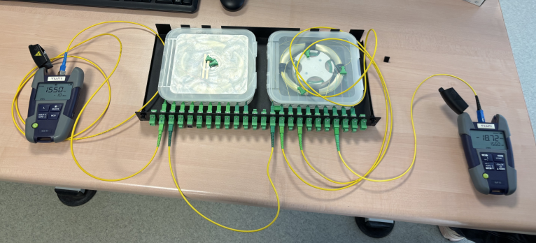

01
Méthodologie utilisée
Mesure DTF sur câble coaxial RG58
Connexion du câble coaxial à l'analyseur DTF, saisie de la NVP de 66 % (valeur constructeur du RG58), lancement de la mesure. L'analyseur affiche la distance à chaque discontinuité et à l'extrémité ouverte du câble, donnant directement la longueur.
Vérification en régime impulsionnel (GBF + oscilloscope)
Configuration du GBF en mode impulsion (largeur < 100 ns), observation sur l'oscilloscope de l'impulsion aller et de son écho retour. Mesure du temps aller-retour Δt, puis calcul : L = (NVP × c × Δt) / 2. Résultat comparé à la mesure DTF pour validation croisée.
Détermination de la NVP du câble Ethernet
Mesure sur le câble étalon de 2 m connu : relevé du temps de propagation, calcul de la NVP = (2 × L) / (c × Δt). Application de cette NVP calculée (~69 %) au câble Ethernet inconnu pour en déterminer la longueur par DTF puis vérification en régime impulsionnel.
Mesure photométrique fibre optique
Câblage de la liaison FTTH attribuée (nettoyage des connecteurs SC/APC au kit dédié), injection de la source optique calibrée, mesure de la puissance reçue au photomètre. Calcul : Atténuation (dB) = P_émis (dBm) − P_reçu (dBm). Vérification que le budget optique est dans les normes FTTH.
Rédaction de la fiche de synthèse A3
Élaboration d'une fiche manuscrite A3 recto/verso regroupant les formules clés (v = NVP × c, L = v × t/2, Att = P_émis − P_reçu), les schémas de câblage et la procédure de certification. Cette fiche était autorisée lors du QCM final.
02
Problèmes rencontrés & solutions apportées
Problèmes
Résultat DTF incohérent avec le régime impulsionnel
Les deux méthodes donnaient des longueurs différentes de plus de 10 % sur le câble coaxial, ce qui indiquait une erreur dans l'une des deux mesures.
Atténuation fibre anormalement élevée
La première mesure photométrique donnait une atténuation de 8 dB, bien au-delà du budget FTTH acceptable, ce qui signalait un problème de câblage.
Solutions
Mauvaise lecture du temps sur l'oscilloscope
J'avais mesuré le temps de l'impulsion aller au lieu du temps aller-retour. En relisant le protocole et en mesurant correctement le Δt entre les deux fronts montants (aller et écho), les deux résultats ont convergé à moins de 2 % d'écart.
Connecteur SC/APC mal orienté
Les connecteurs à angle (APC) ont une orientation physique obligatoire — un connecteur retourné à 180° introduit une perte énorme. Après avoir nettoyé et correctement orienté tous les connecteurs, l'atténuation est retombée à 2,8 dB, dans les normes.
03
Ce que j'ai appris & bilan
Propriétés physiques des supports de transmissionCompréhension concrète de la NVP, de l'atténuation linéique et de leur impact sur les performances et les distances maximales d'un réseau.
Utilisation des appareils de mesure terrainMaîtrise de l'analyseur DTF, du GBF + oscilloscope en régime impulsionnel et du photomètre fibre — outils directement utilisés en certification de câblage professionnel.
Démarche de validation croiséeApprendre à ne pas se fier à une seule mesure : comparer les résultats de deux méthodes différentes pour détecter les erreurs et garantir la fiabilité des résultats.
04
Preuves & livrables
Rapport de mesures · Cuivre
Compte rendu — câble coaxial & Ethernet
Rapport complet des mesures sur câbles cuivre : relevés DTF sur câble coaxial RG58, calcul de NVP du câble Ethernet et vérification en régime impulsionnel. Concordance des deux méthodes.

Mesures fibre optique · Liaison L5 · 13/01/2026
Photo du montage FTTH — mesure photomètre VIAVI
Câblage de la liaison fibre FTTH (liaison L5) sur boîtier de brassage GPON. Mesure photomètre VIAVI OLP-35 à 1550 nm : Pref = −13,8 dBm · Pmes = −18,72 dBm · Atténuation = 4,92 dB.